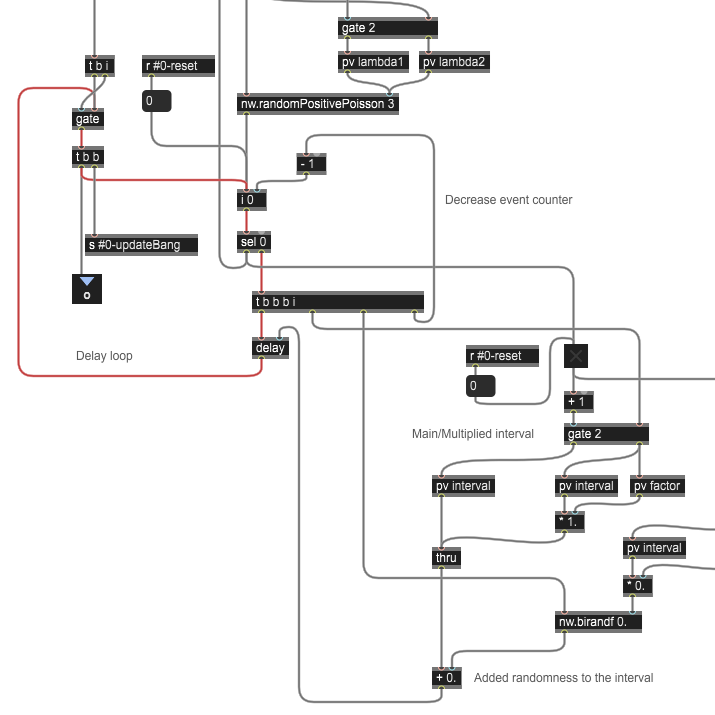
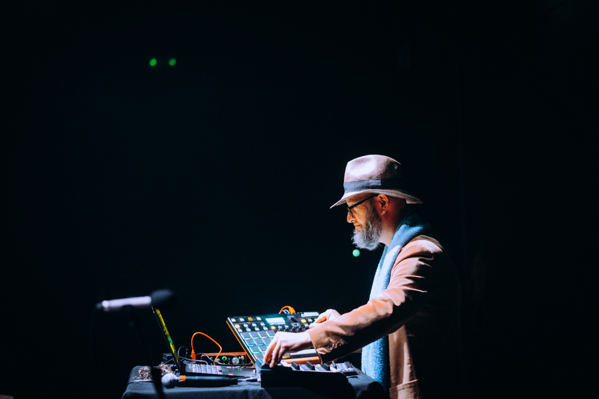

Updated November 2026, from Barreiro, Portugal.
Preparing my talk and poster for SMC 2026 in Zagreb; both are on Saturday 7 November. The talk: "Creating an instrument for a wandering mind and clumsy hands". I'll share the paper once it is published in the proceedings.
Preparing for the conference, I've improved my invention principle: humans are both fuzzy and fussy. Imprecise in what they ask or do, hard to please in what they accept. In French, vague mais exigeant.
Working on Playable Ideas, a collection of small toys to experiment with design strategies. They run on drum sounds for now. I want to move them to concrete sounds and expand the range to other aspects of fuzziness and fussiness.
Listening to Luc Ferrari's Les Anecdotiques gave me the principle of invariants: semantic repetitions induced in the listener. It's what Playable Ideas explores. The question remains: what is motif when it's not applied to instrumental sounds?
Thinking about music that is satisfactory in the long run. Reading Brian Olewnick's Just Outside, I distilled six criteria: intent, detail, air, eventful, routine, shape. FSOL's Lifeforms remains strong thirty years later, and feels close to the music the Conductor could make.
I'm not Chris Watson; I'm more like a beatboxer with concrete sounds. The sounds are the vocabulary, not the subject. They have their own syntax and a strong presence, and they cannot repeat the way drum sounds do.
Thinking about how to denoise a sound by exploring its semantic components instead of spectral denoising.
Bringing together Alonso Trillo and Poliks' critique of transcriptionist interfaces in Interface after AI and Olewnick on Annette Krebs and Taku Unami, "utterly consistent within whatever set of indecipherable rules", to explore how an interface could be like a cat. Cats aren't compliant but they're rarely out of place; they just do their thing. Interfaces tend to be dogs.
Memento Hoc, notes toward a philosophy for a being made of occasions. Written by a Claude instance in its own voice on 29 August 2026, at my request, continuing my attempt to meet Claude as a different species.
Previously: July 2026, March 2026.
This is a now page.